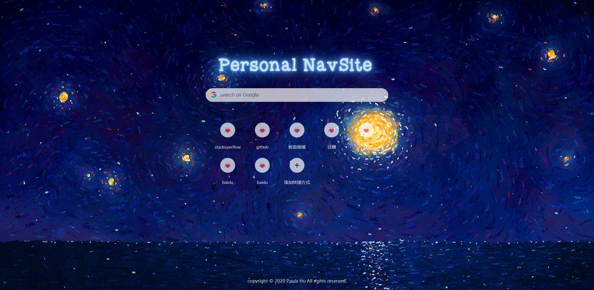

胡佳慧
目标岗位：前端开发工程师

基本信息
- 性 别：女
- 年 龄：25岁
- 毕业院校：中国计量大学
- 专 业：控制工程
- 学 历：硕士
- 英 语：CET-6 / BEC中级
- 现 居：杭州
联系方式
- 18255185821
- 18255185821
- 1244434198
- paulahu1995@gmail.com
个人介绍
- 我是一名 2021届硕士应届生 ，目前学习前端已有近1年的时间了。我认为前端是一个 充满无限可能 的领域，我非常享受做出一个项目或解决一个问题带来的 成就感 ，更享受在社区帮助到其他开发者带来的 满足感 。 希望在未来，我能通过自己的努力为社区做出贡献，开发出 用户体验好 且 易于维护 的产品。
胡佳慧
目标岗位：前端开发工程师
教育经历
-
硕士阶段本科阶段中国计量大学安徽建筑大学控制工程建筑电气及其自动化2018.9-2021.62014.9-2018.6
-
研究生期间专业排名前10%、多次获得校一等奖学金、校优秀学生干部等荣誉。
技能清单
- 熟悉 HTML5 & CSS3 ，能够使用HTML5标签编写 语义化的页面 ，深入理解 层叠上下文， 掌握 CSS3 动画 、 过渡效果 、 响应式 等常用技术， 具有像素级还原设计稿的能力。
- 熟悉原生 JavaScript 和部分 ES6 新特性，理解其重要概念，如： 原型 、原型链 、 事件委托 、 继承 、 Promise 、 跨域 、JsonP 等。
- 熟悉 React 框架及相关流行库（如： Ant Design）的使用，理解其重要概念和工具， 如：常用 Hooks 、 create-react-app 、 React Router 、 Mobx 等，并有相关项目经验。
- 熟悉 Vue 框架及其常用功能，理解其重要概念，如： 生命周期 、 数据响应式 、组件 等，并有相关项目经验。
- 掌握 Git/Github 工作部署流程， 会使用 Git 进行版本控制
- 熟悉PC与移动端的开发与适配，熟悉 微信小程序 开发
- 了解 HTTP 相关知识，了解浏览器的渲染原理
- 在项目中使用过 Webpack 和 Parcel 打包工具，了解前端工程化构建流程
- 了解前端 单元测试 ，有使用过Mocha + Chai + TravisCI来进行测试的经历
- 持续关注新技术，积极参与线下沙龙交流活动（参加了 “前端早早聊” VIP交流群， 参与了“前端女性职业规划经验分享交流会”）
- 英文阅读能力较强（BEC中级、CET六级），能够流畅阅读英文文档，能通过Stack Overflow解决问题，有总结书写笔记和博客的习惯。
项目经历
1. grape-UI
一套基于Vue的组件库(不断更新中)
【项目介绍】
- 这是我在学习 Vue 的过程中做的一套简易 UI组件库, 参照了Antd、Element UI、iVew等UI组件库的样式
- 该组件目前已支持Button（按钮）、Input（输入框）、Grid（栅格）组件，其他基本组件如Layout（布局）、Toast（吐司弹出） 、Tabs（标签页） 、Pop-over（弹出框） 、Collapse（折叠面板）等组件目前正在开发中。
- 每个组件先进行 需求分析 ，画出用例图或时序图，再利用 Axure RP 进行设计，完成视觉稿；再根据视觉稿进行开发，每开发完一个组件就会用 Mocha+chai 进行单元测试，并用 TravisCI 持续集成，保证每个组件的质量；再通过 npm link 协助测试组件是否能够正常使用；最终制作一个基于 Vuepress 来开发一个官方文档，并将组件打包发布到npm，供其他开发者使用。
【技术栈】
- Vue.js + SCSS + Mocha + Chai + TravisCI + npm scripts + Parcel + Vuepress
【项目收获】
- 完成该项目使我对 Vue 的常用特征更加熟悉, 如父子组件如何传值、常用钩子的使用等
- 同时也思考了一些问题，比如style中 scoped 属性有什么用，不写会怎么样，写了有什么好处；script中 name 属性一定要写吗，写了有什么好处等等。
- 在这一过程中我也遇到了一些问题，比如在写input组件时，如何给input组件添加监听事件、添加事件后如何获得原始的event；在写grid组件时，研究了父子组件created和mounted钩子的执行顺序等。
- 同时,自己对 前端工程化 的流程以及 单元测试 的重要性有进一步了解，也更加重视 代码的规范和质量 。
2. EPIC IMAGE
一款用于生成图片在线链接的图床工具
【项目介绍】
- 这是我在学习 React 的过程中做的一个图床网站；EPIC IMAGE是一种用于生成图片在线链接的图床工具，用户可以定制图片大小、浏览已上传的图片。
- 核心功能包括：注册、登录、上传图片、图片尺寸定制、上传历史展示和删除等。
- 本项目使用了 Antd 的相关组件，使用 styled-components 加速React开发，使用 React-router 管理路由，具体来说使用了 Navlink 来进行路由规划、使用 Redirect 实现路径重定向、使用 React.lazy 实现页面的懒加载。同时，使用 react-mobx 实现状态管理，本项目后台数据接口和管理使用了 LeanCloud 来完成。
【技术栈】
- react-create-app + styled-components + React-Router + Mobx + Antd + LeanCloud
【项目收获】
- 完成这个项目让我对React常用特性更加熟悉，如常用的 React Hooks 包括 useState/useEffect 等。
- 在实践的过程中我也遇到一些问题，比如：如何对Antd组件进行二次包装、如何解决项目发布时首次加载正常，再次刷新为404的问题等。
- 这个项目加深了我对 模块化 编程的理解和应用，锻炼了我解决问题的能力。
3. Personal Navsite
自己写的一个实用的导航网站

【项目介绍】
- 这个项目是我在学习 jQuery 的时候写的，设计风格借鉴了Chrone浏览器的样式，在此基础上加以改进。
- 项目的标题使用了 animation 属性设计的闪烁效果，还使用了CSS的 自定义属性 。核心js部分使用了 hashMap 来表示数据结构，使用 localStorage 将数据存储到本地，页面首次加载时执行主函数，再根据用户不同的行为执行对应的函数。
【技术栈】
- jQuery + Javascript + CSS + npm + Parcel
【项目收获】
- 完成这个项目让我对jQuery的使用更加熟悉，对CSS3相关属性和选择器的使用也更加熟练。
- 在实践的过程中我也遇到了一些问题，比如：如何实现点击浮动按钮不跳转到其他页面；在实现删除功能时，怎么知道用户点击的item的index。
- 这个项目让我意识到在写代码前，一定要想好、把逻辑理清楚再动手写；其次，要对“烂代码” 零容忍 ，出现过多重复要及时 重构 ，这样在进行合作开发时才能保证高质高效完成任务。

开源项目
1. Twinkling Rainbow
一个CSS3动效

【项目介绍】
- 这个动画是我在学习 CSS3 的相关属性时做的一个动效。
- HTML结构很简单，就是若干个级联的div，样式部分使用 子元素选择器 对每层div进行样式设计，颜色渐变效果用 animation 属性来实现，波浪效果通过设置 animation-delay 来实现。
【项目收获】
- 通过制作一些有趣的CSS动效，让我明白作为一名前端工程师也需要有足够的创造力和耐心，这也激发了我想要学好前端的信心。
2. Write a DOM Tool
学习DOM时封装的一个DOM库
【项目介绍】
- 这是我在学习DOM的时候，受 jQuery 封装风格的启发，自己封装的一组Api, 目前支持增、删、改、查主要的功能。
【项目收获】
- 通过这个项目不仅让我对DOM的常用Api更加熟悉，还启发了我在学习前端技术的过程要 多总结 、 多思考 ，学会活学活用。